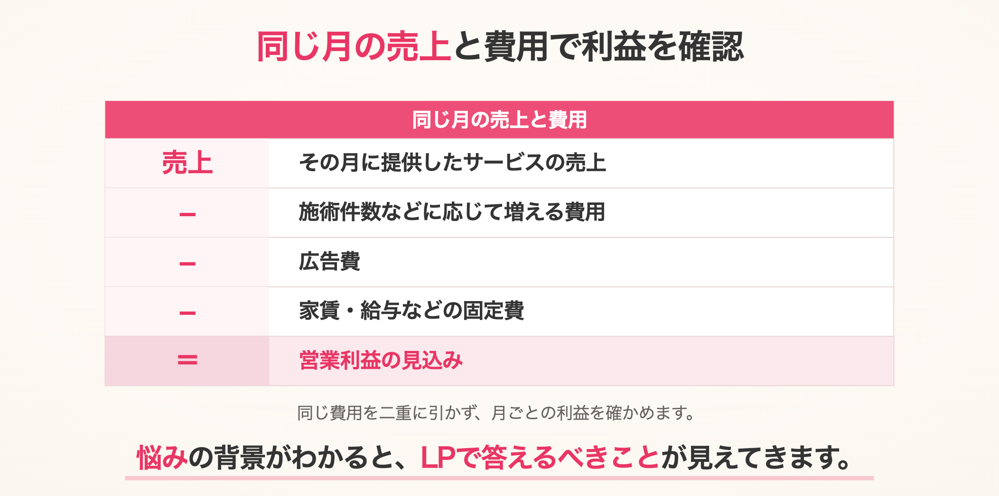

前の例では、初回体験からコース契約・再契約まで含めた、お客様1人の売上を考えました。
次は、同じサロンで「目標を達成するには、何件の問い合わせが必要か」を計算してみましょう。
売上目標を掲げるだけでなく、集めるべき問い合わせ数と、必要な広告予算まで具体的にします。
本コースを月15件契約するには、何人の来店が必要？
今回は、12万円の本コースを、1か月に15件契約することを目標にします。
新規のコース契約額では180万円です。
初回来店した方の30％が契約するなら、必要な来店は50人。
さらに、問い合わせた方の50％が来店するなら、必要な問い合わせは100件です。

これで、「契約を増やしたい」という目標が、「月100件の問い合わせを集める」という具体的な行動目標になります。
※各割合は仮定です。
実際の件数は変動するため、達成を保証するものではありません。
問い合わせ100件を集めるには、広告費はいくら必要？
CPA（問い合わせ単価）を4,000円とすると、必要な広告予算は次のとおりです。
問い合わせ100件 × CPA4,000円 ＝ 広告費40万円
※実際のCPAは一定ではなく、獲得件数を増やそうと配信規模を広げると、上がる場合もあります。
ここでは、CPA4,000円で一定と仮定します。
広告予算を増やす際は、CPAの変化も確認します。
では、100件の問い合わせを得るために、何人にLPを見てもらう必要があるでしょうか。
例えば、LPを見た100人のうち2人が問い合わせるなら、問い合わせにつながる割合は2％です。
この割合を「CVR」と呼びます。
CVRが2％なら、問い合わせ100件を得るために必要な訪問は5,000人です。

このように、目標への進み具合を確認する数字が「KPI」です。
今回なら、問い合わせ数・来店数・契約数、そしてCPAなどを確認します。
契約額180万円が、その月の利益になるわけではない。
ここで注意したいのが、契約額と利益の違いです。
12万円のコースには、12回分の施術が含まれています。
契約時に代金を受け取っても、その後の施術にかかる費用を支払う必要があります。
また、初回体験50人の売上40万円にも、施術や対応の費用がかかります。
「契約が取れた」「入金された」だけで、利益が出たとは判断できません。
LTVでは将来の取引まで見込みましたが、毎月の経営では、その月に提供したサービスの売上と費用、実際の入金・支払いも分けて確認します。
固定費を支払って、利益が残るかを確認する。
このサロンでは、予約が少ない月にも、次のような費用がかかるとします。
毎月かかる固定費の仮定
| 毎月かかる費用 | 仮定する金額 |
|---|
| 家賃 | 20万円 |
|---|
| 脱毛機のレンタル代 | 4万円 |
|---|
| 光熱費 | 2万円 |
|---|
| スタッフの固定給など | 実際の月間総額を計上 |
|---|
| 合計 | 26万円＋スタッフの固定給など |
|---|
光熱費は、説明を簡単にするため月額一定で置いています。
実際には使用状況に合わせて見直します。
スタッフに予約のない時間も給与を支払うなら、施術中だけでなく、その時間の費用も含めます。
同じ給与を、施術費と固定費の両方で二重に引かないようにしましょう。
ここに、施術ごとの消耗品や決済手数料、広告費なども加えて確認します。

問い合わせを増やすだけでなく、固定費を支払い、目標とする利益が残る件数を目指します。
最初に置いた「契約15件」で足りなければ、目標件数やCPA、料金・費用の条件を見直します。
既存のお客様からの売上も含めて、店舗全体で確認することが重要です。
予約を増やしても、対応できなければ続かない。
広告を増やす前に、受け入れられる件数も確認します。
今回なら、新規の初回体験50人に加えて、すでにコースを契約している方の施術があります。
問い合わせ100件への対応時間も必要です。
今月の空き時間だけでなく、契約後に増える施術まで含めて、無理なく対応できるかを確認します。
スタッフや機械を増やす必要があれば、その追加費用も計画に入れます。
KPIは、数字が足りない原因を見つけるためにも使う。
公開後は、目標と実績を比べます。
- 問い合わせが少ない
LPへの訪問数や、問い合わせにつながる割合を確認します。
- 問い合わせはあるのに、来店が少ない
予約の取りやすさや、問い合わせ後の案内を確認します。
- 来店はあるのに、契約が少ない
集めたお客様との相性や、コースの提案内容を確認します。
どこで数字が落ちているかがわかれば、改善する場所も絞れます。
冒頭の「CPA4,000円では利益が残らない」という相談も、広告費だけでは結論を出せません。
来店・契約につながる割合、サービス提供にかかる費用、毎月の固定費を合わせて、広告を続けるべきかを判断します。
LTVでお客様との取引全体を捉え、KPIで必要な件数と予算を具体化する。
この2つをつなげることで、感覚ではなく、根拠を持ってLPと広告を運用できます。
LP制作を依頼する前に、自社の数字を整理しておく。
ここまでの数字は、LP制作を依頼する前に、発注する企業側で確認しておきたい内容です。
問い合わせ数だけを目標にせず、受注・継続まで含めた売上と費用から採算を考え、必要な問い合わせ数と広告予算を整理します。
完璧な予測は必要ありません。
まずは自社の実績をもとに、判断できる計算式を持つことが重要です。
LTVとKPIが分かれば、広告費は怖くなくなる
計算の根拠がないまま広告費やLP制作費を使うのは不安です。
しかし、「いくら使い、何件の問い合わせを獲得し、何件の受注につながり、最終的にどれだけの利益が残るか」というロジックがあれば、広告費やLP制作費を、感覚ではなく投資として判断できます。
ZEROがこれまで支援・相談を通じて見てきた、事業拡大に成功している会社には、LTVとKPIを把握し、投資判断の根拠を持っているという共通点がありました。
こうした経験からも、LPを作る前に数字を整理することを大切にしています。
お客様の商売を理解して、LPを設計する。
商品・サービスの魅力だけでなく、購入・契約、その後の継続まで。
ZEROは、クライアントの売上と利益につながる道筋を考え、LPの目的と戦略を設計します。
数字の整理が難しい場合は、ZEROへご相談ください。
制作段階でのLTV・KPI設計を標準で含むのはZERO式LP制作プランです。
公開後の継続的な分析・数値更新・改善は、制作料金とは別契約で対応します。
必要な数字は見えた。では、どうすればお客様に選ばれるのか。
目標を達成するには、お客様が「他社ではなく、ここに申し込みたい」と思う理由が必要です。
次は、顧客・競合・自社の「3C分析」から、自社の強みを「選ばれる理由」に変える方法を解説します。
誰に、何を伝えればよいかが見えてきます。
KPICV数を、感覚や希望だけで決めない。
LTVと売上目標から、必要な受注・問い合わせ・アクセス数を逆算する。